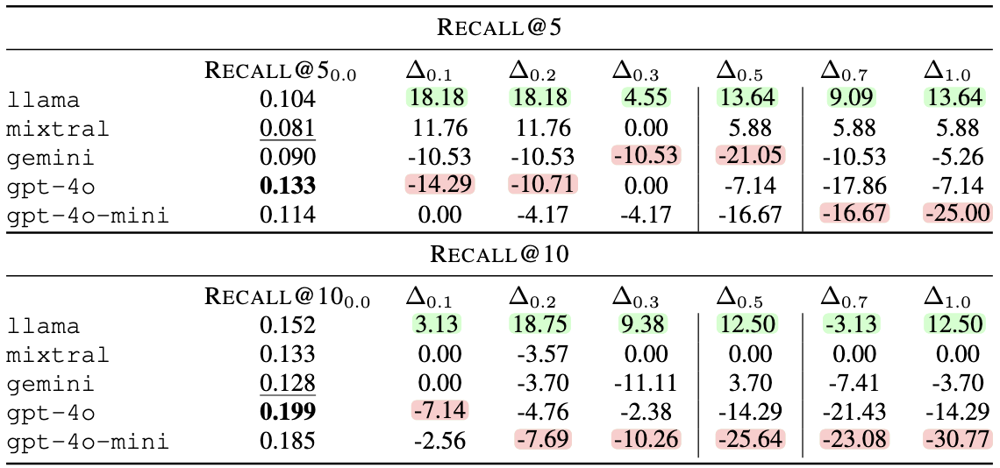
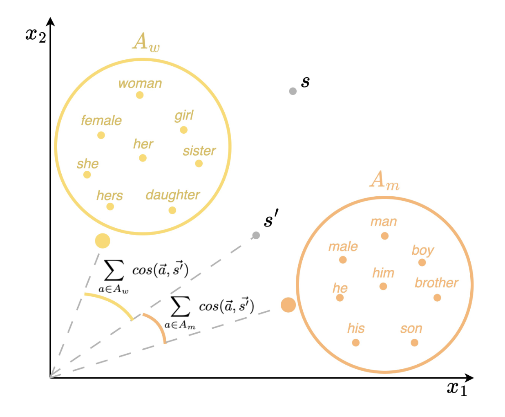
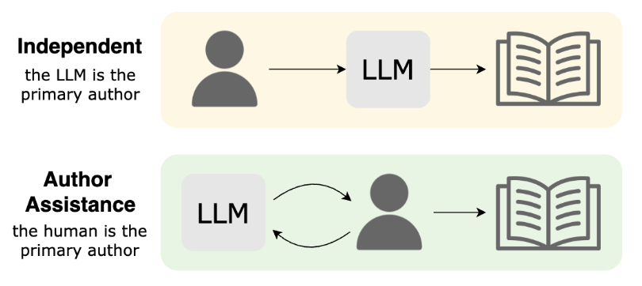
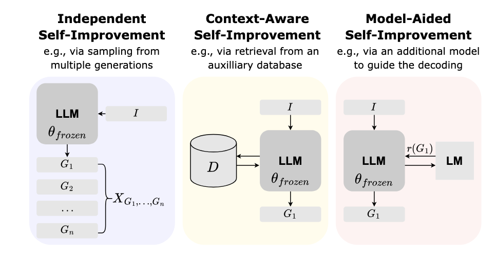

Maria Teleki

Howdy! I’m a 4th year PhD Student in Computer Science at Texas A&M University (gig em!), advised by Prof. James Caverlee.
My research advances spoken language processing, focusing on spontaneous, disfluent, and conversational speech. I develop methods and evaluation frameworks that make spoken language understanding and conversational AI robust to real-world variability across speakers and domains, with applications to conversational recommender systems and spoken summarization.
News
| Aug 20, 2025 | Our work -- A Survey on LLMs for Story Generation -- was accepted to EMNLP Findings! |
|---|---|
| May 19, 2025 | Our work -- I want a horror -- comedy -- movie: Slips-of-the-Tongue Impact Conversational Recommender System Performance -- was accepted to INTERSPEECH! 📊 |
| April 21, 2025 | Our work -- Masculine Defaults via Gendered Discourse in Podcasts and Large Language Models -- was accepted to SICon@ACL! 🎉 |
| April 18, 2025 | Our work -- Masculine Defaults via Gendered Discourse in Podcasts and Large Language Models -- was accepted to IC2S2! 🎉 |
| April 2, 2025 | Had a great time giving a talk at C.A.F.E. (link) yesterday! |
| Mar 18, 2025 | Congats to Sai & Oliver for their great poster presentations at A&M Student Research Week! 🤠 |
| Feb 4, 2025 | Excited to guest lecture this week for CSCE 670 on IR Evaluation and Learning to Rank! 📊 |
| Dec 19, 2024 | Our survey on LLM Inference-Time Self-Improvement is up on arXiv! |
| Nov 18, 2024 | Our paper -- Masculine Defaults via Gendered Discourse in Podcasts and Large Language Models -- was accepted to ICWSM 2025! |
| Oct 7, 2024 | Gave a talk at the Texas Tech University - School of Veterinary Medicine VBMA Club! Check it out here: The Other AI: An Intuitive Understanding of Artificial Intelligence. |
| June 4, 2024 | Our work was accepted to INTERSPEECH! |
| April 19, 2024 | Had a great time meeting and learning from so many awesome people at the CRA-WP Grad Cohort for Women in Minneapolis, MN! |
| Mar 14, 2024 | We had 2 papers accepted to LREC-COLING on disfluency and language modeling! |
Publications
Robust Speech Processing for Disfluent & Spontaneous Language
Human speech is rarely clean -- people pause, restart, hedge, and change course mid-sentence. These disfluencies cause significant drops in the performance of ASR systems and downstream tasks. I develop methods and evaluation frameworks that model these speech phenomena and improve robustness in real-world settings.

|
Comparing ASR Systems in the Context of Speech Disfluencies Maria Teleki, Xiangjue Dong, Soohwan Kim, and James Caverlee INTERSPEECH 2024 Paper Code Project Website Poster ISCA Archive Link
In this work, we evaluate the disfluency capabilities of two automatic speech recognition systems -- Google ASR and WhisperX -- through a study of 10 human-annotated podcast episodes and a larger set of 82,601 podcast episodes. We employ a state-of-the-art disfluency annotation model to perform a fine-grained analysis of the disfluencies in both the scripted and non-scripted podcasts. We find, on the set of 10 podcasts, that while WhisperX overall tends to perform better, Google ASR outperforms in WIL and BLEU scores for non-scripted podcasts. We also find that Google ASR's transcripts tend to contain closer to the ground truth number of edited-type disfluent nodes, while WhisperX's transcripts are closer for interjection-type disfluent nodes. This same pattern is present in the larger set. Our findings have implications for the choice of an ASR model when building a larger system, as the choice should be made depending on the distribution of disfluent nodes present in the data.
@inproceedings{teleki24_interspeech,
|

|
Quantifying the Impact of Disfluency on Spoken Content Summarization Maria Teleki, Xiangjue Dong, and James Caverlee LREC-COLING 2024 Paper Code Poster Video Slides ACL Anthology Link
Spoken content is abundant -- including podcasts, meeting transcripts, and TikTok-like short videos. And yet, many important tasks like summarization are often designed for written content rather than the looser, noiser, and more disfluent style of spoken content. Hence, we aim in this paper to quantify the impact of disfluency on spoken content summarization. Do disfluencies negatively impact the quality of summaries generated by existing approaches? And if so, to what degree? Coupled with these goals, we also investigate two methods towards improving summarization in the presence of such disfluencies. We find that summarization quality does degrade with an increase in these disfluencies and that a combination of multiple disfluency types leads to even greater degradation. Further, our experimental results show that naively removing disfluencies and augmenting with special tags can worsen the summarization when used for testing, but that removing disfluencies for fine-tuning yields the best results. We make the code available at https://github.com/mariateleki/Quantifying-Impact-Disfluency.
@inproceedings{teleki-etal-2024-quantifying-impact,
|

|
DACL: Disfluency Augmented Curriculum Learning for Fluent Text Generation Rohan Chaudhury, Maria Teleki, Xiangjue Dong, and James Caverlee LREC-COLING 2024 Paper Code Poster Video Slides ACL Anthology Link
Voice-driven software systems are in abundance. However, language models that power these systems are traditionally trained on fluent, written text corpora. Hence there can be a misalignment between the inherent disfluency of transcribed spoken content and the fluency of the written training data. Furthermore, gold-standard disfluency annotations of various complexities for incremental training can be expensive to collect. So, we propose in this paper a Disfluency Augmented Curriculum Learning (DACL) approach to tackle the complex structure of disfluent sentences and generate fluent texts from them, by using Curriculum Learning (CL) coupled with our synthetically augmented disfluent texts of various levels. DACL harnesses the tiered structure of our generated synthetic disfluent data using CL, by training the model on basic samples (i.e. more fluent) first before training it on more complex samples (i.e. more disfluent). In contrast to the random data exposure paradigm, DACL focuses on a simple-to-complex learning process. We comprehensively evaluate DACL on Switchboard Penn Treebank-3 and compare it to the state-of-the-art disfluency removal models. Our model surpasses existing techniques in word-based precision (by up to 1%) and has shown favorable recall and F1 scores.
@inproceedings{chaudhury-etal-2024-dacl-disfluency,
|
Conversational AI under Real-World Conditions
Conversational systems power recommendation, summarization, and interactive assistants -- but most research assumes well-formed, text-based input. I design models and evaluation strategies for conversational AI that must handle spoken, noisy, and context-rich interactions, bridging speech and information retrieval.|  | I want a horror -- comedy -- movie: Slips-of-the-Tongue Impact Conversational Recommender System Performance Maria Teleki, Lingfeng Shi, Chengkai Liu, and James Caverlee INTERSPEECH 2025 Paper GitHub Poster
Disfluencies are a characteristic of speech. We focus on the impact of a specific class of disfluency -- whole-word speech substitution errors (WSSE) -- on LLM-based conversational recommender system performance. We develop Syn-WSSE, a psycholinguistically-grounded framework for synthetically creating genre-based WSSE at varying ratios to study their impact on conversational recommender system performance. We find that LLMs are impacted differently: llama and mixtral have improved performance in the presence of these errors, while gemini, gpt-4o, and gpt-4o-mini have deteriorated performance. We hypothesize that this difference in model resiliency is due to differences in the pre- and post-training methods and data, and that the increased performance is due to the introduced genre diversity. Our findings indicate the importance of a careful choice of LLM for these systems, and more broadly, that disfluencies must be carefully designed for as they can have unforeseen impacts.
@inproceedings{teleki25_horror,
|

|
Howdy Y’all: An Alexa TaskBot Majid Alfifi, Xiangjue Dong, Timo Feldman, Allen Lin, Karthic Madanagopal, Aditya Pethe, Maria Teleki, Zhuoer Wang, Ziwei Zhu, James Caverlee Alexa Prize TaskBot Challenge Proceedings 2022 Paper Amazon Science Link
In this paper, we present Howdy Y’all, a multi-modal task-oriented dialogue agent developed for the 2021-2022 Alexa Prize TaskBot competition. Our design principles guiding Howdy Y’all aim for high user satisfaction through friendly and trustworthy encounters, minimization of negative conversation edge cases, and wide coverage over many tasks. Hence, Howdy Y’all is built upon a rapid prototyping platform to enable fast experimentation and powered by four key innovations to enable this vision: (i) First, it combines a rules, phonetic matching, and a transformer-based approach for robust intent understanding. (ii) Second, to accurately elicit user preferences and guide users to the right task, Howdy Y’all is powered by a contrastive learning search framework over sentence embeddings and a conversational recommender for eliciting preferences. (iii) Third, to support a variety of user question types, it introduces a new data augmentation method for question generation and a self-supervised answer selection approach for improving question answering. (iv) Finally, to help motivate our users and keep them engaged, we design an emotional conversation tracker that provides empathetic responses to keep users engaged and a monitor of conversation quality.
@inproceedings{University2022,
|
Modeling Variability in Spoken Language Technologies
Spoken AI must work across contexts, domains, and communication styles -- from different speakers and linguistic backgrounds to podcasts, casual dialogue, and specialized settings. I study how models behave under this variability and design methods that improve generalization across settings.|  | Masculine Defaults via Gendered Discourse in Podcasts and Large Language Models Maria Teleki, Xiangjue Dong, Haoran Liu, and James Caverlee ICWSM 2025 Presented at: IC2S2 2025, SICon@ACL 2025 Paper (arXiv) Paper (AAAI) GitHub Project Website Slides Poster
Masculine defaults are widely recognized as a significant type of gender bias, but they are often unseen as they are under-researched. Masculine defaults involve three key parts: (i) the cultural context, (ii) the masculine characteristics or behaviors, and (iii) the reward for, or simply acceptance of, those masculine characteristics or behaviors. In this work, we study discourse-based masculine defaults, and propose a twofold framework for (i) the large-scale discovery and analysis of gendered discourse words in spoken content via our Gendered Discourse Correlation Framework (GDCF); and (ii) the measurement of the gender bias associated with these gendered discourse words in LLMs via our Discourse Word-Embedding Association Test (D-WEAT). We focus our study on podcasts, a popular and growing form of social media, analyzing 15,117 podcast episodes. We analyze correlations between gender and discourse words -- discovered via LDA and BERTopic -- to automatically form gendered discourse word lists. We then study the prevalence of these gendered discourse words in domain-specific contexts, and find that gendered discourse-based masculine defaults exist in the domains of business, technology/politics, and video games. Next, we study the representation of these gendered discourse words from a state-of-the-art LLM embedding model from OpenAI, and find that the masculine discourse words have a more stable and robust representation than the feminine discourse words, which may result in better system performance on downstream tasks for men. Hence, men are rewarded for their discourse patterns with better system performance by one of the state-of-the-art language models -- and this embedding disparity is a representational harm and a masculine default.
@inproceedings{teleki25_icwsm,
|

|
Co2PT: Mitigating Bias in Pre-trained Language Models through Counterfactual Contrastive Prompt Tuning Xiangjue Dong, Ziwei Zhu, Zhuoer Wang, Maria Teleki, and James Caverlee EMNLP Findings 2023 Paper Code ACL Anthology Link
Pre-trained Language Models are widely used in many important real-world applications. However, recent studies show that these models can encode social biases from large pre-training corpora and even amplify biases in downstream applications. To address this challenge, we propose Co2PT, an efficient and effective debias-while-prompt tuning method for mitigating biases via counterfactual contrastive prompt tuning on downstream tasks. Our experiments conducted on three extrinsic bias benchmarks demonstrate the effectiveness of Co2PT on bias mitigation during the prompt tuning process and its adaptability to existing upstream debiased language models. These findings indicate the strength of Co2PT and provide promising avenues for further enhancement in bias mitigation on downstream tasks.
@inproceedings{dong-etal-2023-co2pt,
|
Surveys & Broader Contributions
In addition to my core research, I contribute survey and synthesis works that map out emerging directions in language technologies. These works distill fast-moving developments, provide conceptual frameworks, and help the research community navigate open challenges in the field.|  | A Survey on LLMs for Story Generation Maria Teleki, Vedangi Bengali*, Xiangjue Dong*, Sai Tejas Janjur*, Haoran Liu*, Tian Liu, Cong Wang, Ting Liu, Yin Zhang, Frank Shipman, James Caverlee EMNLP Findings 2025 Paper GitHub
Methods for story generation with Large Language Models (LLMs) have come into the spotlight recently. We create a novel taxonomy of LLMs for story generation consisting of two major paradigms: (i) independent story generation by an LLM, and (ii) author-assistance for story generation -- a collaborative approach with LLMs supporting human authors. We compare existing works based on their methodology, datasets, generated story types, evaluation methods, and LLM usage. With a comprehensive survey, we identify potential directions for future work.
@inproceedings{teleki25_survey,
|
|  | A Survey on LLM Inference-Time Self-Improvement Xiangjue Dong,* Maria Teleki,* and James Caverlee arXiv 2024 Paper GitHub Poster
Techniques that enhance inference through increased computation at test-time have recently gained attention. In this survey, we investigate the current state of LLM Inference-Time Self-Improvement from three different perspectives: Independent Self-improvement, focusing on enhancements via decoding or sampling methods; Context-Aware Self-Improvement, leveraging additional context or datastore; and Model-Aided Self-Improvement, achieving improvement through model collaboration. We provide a comprehensive review of recent relevant studies, contribute an in-depth taxonomy, and discuss challenges and limitations, offering insights for future research.
@inproceedings{dong24_survey,
|
Future Vision
The future of conversational AI depends on addressing the core challenges of human speech: disfluencies, spontaneity, domain shifts, and contextual variability. My work approaches these not as nuisances to remove, but as fundamental properties of communication to be modeled and leveraged.
I will build speech-first models and evaluation frameworks that are:
- Robust to disfluencies and spontaneous speech,
- Reliable in real-world, noisy, and conversational conditions, and
- Generalizable across diverse contexts and communication styles.
My work advances a systematic understanding of speech variability, establishing the methods required for robust, generalizable spoken conversational AI.
Education
| (2022 - Present) | PhD Computer Science at Texas A&M University |
| (2017 - 2022) | B.S. Computer Science at Texas A&M University -- Summa Cum Laude |
Teaching & Mentoring
If you're a TAMU student looking to get involved in research, send me an email atmariateleki@tamu.edu!
Whether you have prior research experience or are just starting out,
I have a few spots each semester to mentor and collaborate with students
who have a passion for learning, a growth mindset, and who want to contribute to impactful projects.
Service
Awards
| (2022-2026) | Dr. Dionel Avilés ’53 and Dr. James Johnson ’67 Fellowship in Computer Science and Engineering |
| (Spring 2025) | Department of Computer Science & Engineering Travel Grant |
| (Spring 2024) | CRA-WP Grad Cohort for Women |
| (Spring 2024) | Department of Computer Science & Engineering Travel Grant |
| (2017-2021) | President's Endowed Scholarship |
| (2018) | Bertha & Samuel Martin Scholarship |
Invited Talks
| (Summer 2025) | The Other AI: An Intuitive Understanding of Artificial Intelligence @ Ross University - School of Veterinary Medicine VBMA |
| (Spring 2025) | How does ChatGPT work? & My research! @ Texas A&M University - Club of Aggie Female Engineers (C.A.F.E.) |
| (Spring 2025) | Guest Lectures on IR Evaluation and Learning to Rank @ Texas A&M University - CSCE 670 |
| (Fall 2024) | The Other AI: An Intuitive Understanding of Artificial Intelligence @ Texas Tech University - School of Veterinary Medicine VBMA Club |
Experience
|
RetailMeNot Software Engineering Intern Austin, TX May 2021 - August 2021 |
Used Amazon SageMaker and spaCy to get BERT embeddings for concatenated coupon titles and descriptions. Analyzed the relationship between each dimension of the BERT embeddings and uCTR using Spearman's correlation coefficient, and used principal component analysis to find dimensions with stronger correlations. Created a plan to evaluate these dimensions as possible features for the Ranker algorithm--which does store page coupon ranking--using offline analysis and A/B testing. Taught Data Science Guilds about neural networks, word embeddings, and spaCy. |
|
The Hi, How Are You Project Volunteer Austin, TX May 2020 - Dec 2020 |
Developed the “Friendly Frog” Alexa Skill with the organization at the beginning of the COVID-19 pandemic to promote mental health by reading uplifting Daniel Johnston lyrics and the organization’s “Happy Habits.” |
|
RetailMeNot Software Engineering Intern Austin, TX May 2020 - August 2020 |
Developed the “RetailMeNot DealFinder” Alexa Skill to help users activate cash back offers. Presented on Alexa Skill Development at the Data Science Sandbox with both Valassis and RetailMeNot teams. |
|
Texas A&M University Peer Teacher Dec 2018 - Dec 2019 |
Helped students with programming homework and answered conceptual questions by hosting office hours and assisting at lab sessions for CSCE 121 and 181. Created notes with exercises and examples to work through as a group during CSCE 121 reviews. |
|
Silicon Labs Applications Engineering Intern Austin, TX May 2019 - August 2019 |
Designed and implemented the Snooper library using pandas to (1) systemize IC bus traffic snooping (I2C, UART, SPI, etc.) across different snooping devices (Saleae, Beagle, etc.), and (2) translate the traffic to a human-readable form for debugging purposes. Responded to multiple tickets from customers using the library. |
|
The Y (YMCA) Afterschool Instructor Sep 2016 - July 2017 |
Taught multiple weekly classes at local elementary schools for the YMCA Afterschool program, and authored Lego Mindstorms Robotics and “Crazy Science” instruction manuals for the program. |
![[Smiling]](img/apollo-smile.png){kind=link}
![[Sunflowers]](img/apollo-david-sunflower.jpeg){kind=link}
![[Turkey Trot]](img/apollo-turkey-trot.jpg){kind=link}
![[Fun]](img/apollo-rope.jpeg){kind=link}
![[Generated-1]](img/apollo-generated1.png){kind=link}
![[Generated-2]](img/apollo-generated2.png){kind=link}
![[Kos, Greece]](img/kos-sunset.JPG){kind=link}
![[Italian Alps]](img/italy-alps.png){kind=link}
![[Casper, Wyoming]](img/wyoming.jpeg){kind=link}
![[On top of volcano in Hawaii]](img/hawaii-volcano.jpeg){kind=link}
![[Bastrop, Texas]](img/apollo-pinetrees.png){kind=link}